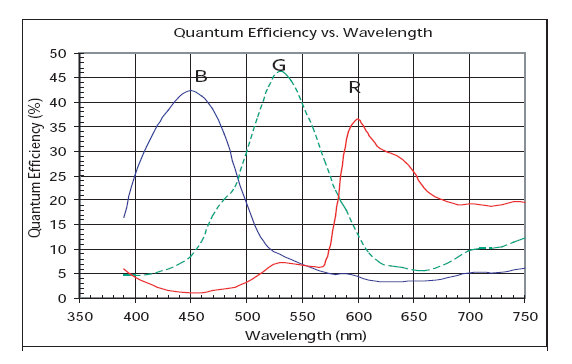

PhenoCam quantum efficiency response
View the Project on GitHub khufkens/phenocam-response-curves
PhenoCam / Stardot 5MP quantum efficiency functions. Data were digitized resampled to a 1 nm interval scale and truncated to the 400 and 750nm range.
